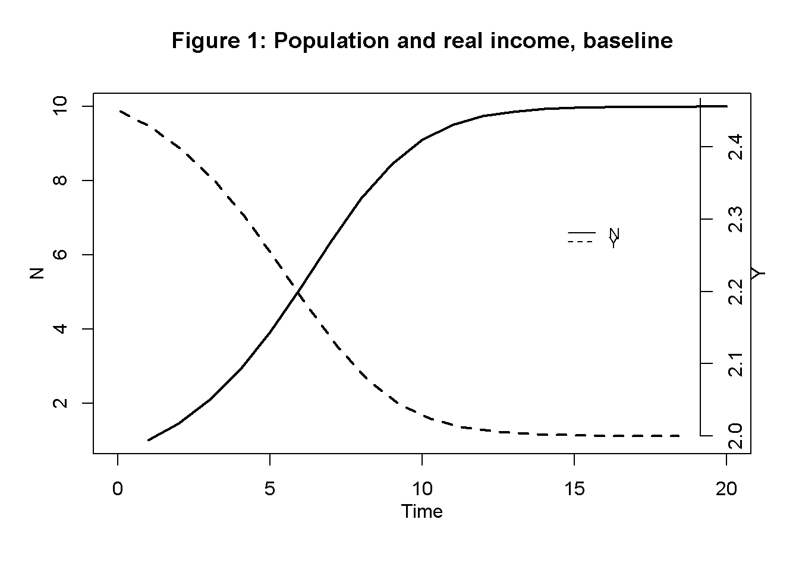
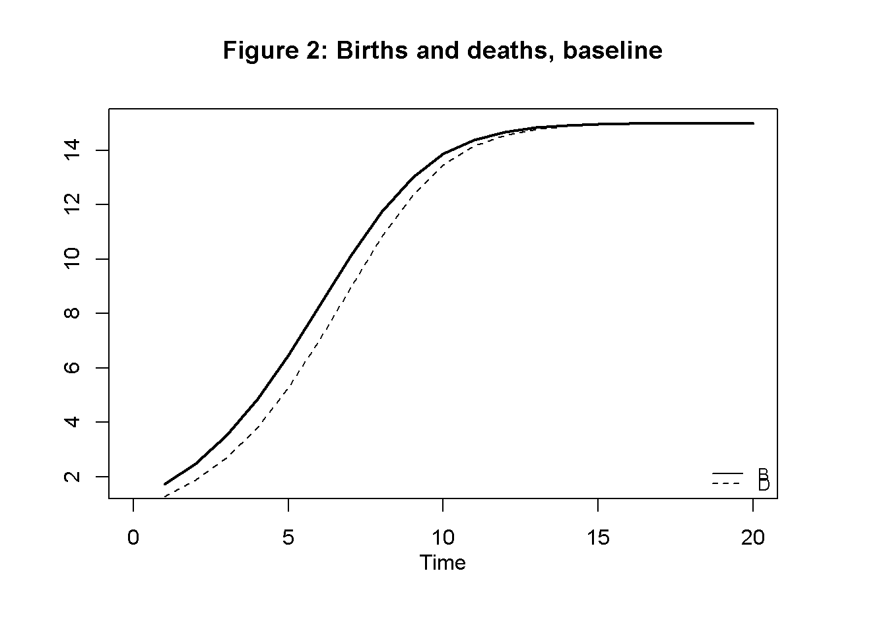
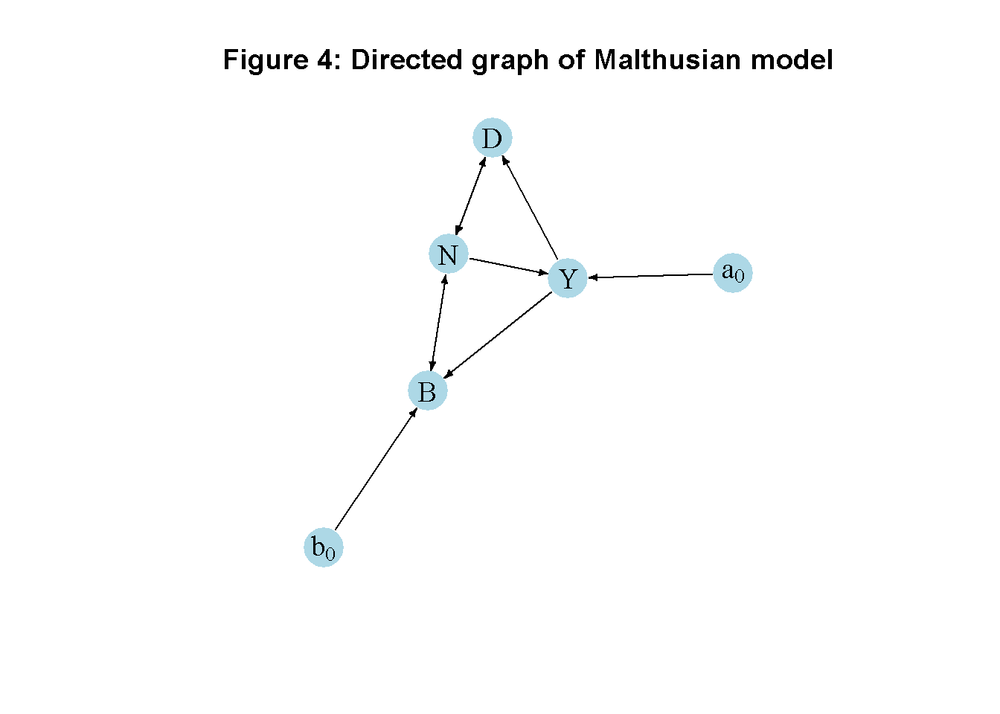

# Clear the environment
rm(list=ls(all=TRUE))
# Set number of periods
T=100
# Set number of scenarios (including baseline)
S=4
# Set period in which shock/shift will occur
s=5
# Create (S x T)-matrices that will contain the simulated data
N=matrix(data=0,nrow=S,ncol=T) # population
Y=matrix(data=0,nrow=S,ncol=T) # real income
B=matrix(data=0,nrow=S,ncol=T) # births
D=matrix(data=0,nrow=S,ncol=T) # deaths
N_eq=vector(length=S) # equilibrium population
Y_eq=vector(length=S) # equilibrium real income
B_eq=vector(length=S) # equilibrium births
D_eq=vector(length=S) # equilibrium deaths
# Set baseline parameter values
b0=matrix(data=0.5,nrow=S,ncol=T) # Exogenous birth rate
b1=0.5 # Sensitivity of births with respect to real income
d0=2.5 # Exogenous death rate
d1=0.5 # Sensitivity of deaths with respect to real income
a0=matrix(data=2.5,nrow=S,ncol=T) # Exogenous component of real income
a1=matrix(data=0.05,nrow=S,ncol=T) #Sensitivity of the real income with respect to population
# Set parameter values for different scenarios
b0[2,s:T]=0.4 # scenario 2: reduction in birth rate
a1[3,s:T]=0.07 # scenario 3: increase in sensitivity of real income with respect to population
a0[4,s:T]=2.6 # scenario 4: improvement in productivity
# Initialise
N[,1]=1
Y[,1]=1
B[,1]=1
D[,1]=1
# Simulate the model by looping over T time periods for S different scenarios
for (i in 1:S){
for (t in 2:T){
for (iterations in 1:1000){ # run the model 1000-times in each period
# (1) Population dynamics
N[i,t] = N[i,t-1] + B[i,t-1] - D[i,t-1]
# (2) Births
B[i,t] = (b0[i,t] + b1*Y[i,t])*N[i,t]
# (3) Deaths
D[i,t] = (d0 - d1*Y[i,t])*N[i,t]
# (4) Real income
Y[i,t] = a0[i,t] - a1[i,t]*N[i,t]
} # close iterations loop
} # close time loop
} # close scenario loop13 A Malthusian Model
Overview
This model captures some key feature of Thomas Malthus’ theory of population dynamics as developed in his 1798 book An Essay on the Principle of Population. The theory revolves around the interaction between living standards and population growth.1 It assumes that birth rates increase with rising living standards, while death rates decline. Economic growth thus spurs population growth. However, due to supply constraints in agricultural production, population growth drives up food prices and thereby undermines real income, bringing population growth to a halt. The model is adapted from Karl Whelan’s lecture notes.
The Model
The following equations describe the model:
\[ N_t = N_{t-1} + B_{t-1} - D_{t-1} \tag{13.1}\]
\[ \frac{B_{t}}{N_t} = b_0 + b_1Y_t \tag{13.2}\]
\[ \frac{D_{t}}{N_t} = d_0 - d_1Y_t \tag{13.3}\]
\[ Y_t = a_0-a_1N_t \tag{13.4}\]
where \(N_t\), \(B_t\), \(D_t\), and \(Y_t\) represent population, number of births, number of deaths, and real income, respectively.
Equation 13.1 describes population dynamics as driven by births and deaths. Equation 13.2 and Equation 13.3 the Malthusian hypothesis that birth rates are positively and death rates negatively related to income. Equation 13.4 makes real income a negative function of the population, which captures the idea of supply constraints in agriculture.
Simulation
Parameterisation
Table reports the parameterisation and initial values used in the simulation. Besides a baseline (labelled as scenario 1), three further scenarios will be considered. Scenario 2 models what Malthus called preventative checks: a fall in the exogenous component of the birth rate (\(b_0\)) due to an increased use of contraception, changes in marriage norms etc. Scenario 3 models`positive checks’: a rise in the sensitivity of real income with respect to the population (\(a_1\)), capturing factors such as increased food scarcity. Scenario 4 considers a rise in the exogenous component of real income (\(a_0\)), which could be interpreted as a productivity boost due to the invention of better fertilisers. All scenarios initialise the population below its steady state value at \(N_0=1\) and the other variables at their steady state values.
Table 1: Parameterisation
| Scenario | \(b_0\) | \(b_1\) | \(d_0\) | \(d_1\) | \(a_0\) | \(a_1\) |
|---|---|---|---|---|---|---|
| 1: baseline | 0.5 | 0.5 | 2.5 | 0.5 | 2.5 | 0.05 |
| 2: fall in exog birth rate (\(b_0\)) | 0.4 | 0.5 | 2.5 | 0.5 | 2.5 | 0.05 |
| 3: rise in sensitivity of income (\(a_1\)) | 0.5 | 0.5 | 2.5 | 0.5 | 2.5 | 0.07 |
| 4: productivity boost (\(a_0\)) | 0.5 | 0.5 | 2.5 | 0.5 | 2.6 | 0.05 |
Simulation code
Python code
# Load relevant libraries
import numpy as np
# Set number of periods
T = 100
# Set number of scenarios (including baseline)
S = 4
# Set period in which shock/shift will occur
s = 5
# Create (S x T)-matrices that will contain the simulated data
N = np.zeros((S, T)) # population
Y = np.zeros((S, T)) # real income
B = np.zeros((S, T)) # births
D = np.zeros((S, T)) # deaths
N_eq = np.zeros((S)) # equilibrium population
Y_eq = np.zeros((S)) # equilibrium real income
B_eq = np.zeros((S)) # equilibrium births
D_eq = np.zeros((S)) # equilibrium deaths
# Set baseline parameter values
b0 = np.zeros((S, T)) + 0.5 # Exogenous birth rate
b1 = 0.5 # Sensitivity of births with respect to real income
d0 = 2.5 # Exogenous death rate
d1 = 0.5 # Sensitivity of deaths with respect to real income
a0 = np.zeros((S, T)) + 2.5 # Exogenous component of real income
a1 = np.zeros((S, T)) + 0.05 # Sensitivity of the real income with respect to population
# Set parameter values for different scenarios
b0[1, s:T] = 0.4 # scenario 2: reduction in birth rate
a1[2, s:T] = 0.07 # scenario 3: increase in sensitivity of real income with respect to population
a0[3, s:T] = 2.6 # scenario 4: improvement in productivity
# Initialise
N[:,0] = 1
Y[:,0] = Y_eq[0]
B[:,0] = B_eq[0]
D[:,0] = D_eq[0]
# Simulate the model by looping over T time periods for S different scenarios
for i in range(S):
for t in range(1, T):
for iterations in range(1000): # run the model 1000-times in each period (to make sure the order of equations doesn't matter)
# (1) Population dynamics
N[i,t] = N[i,t-1] + B[i,t-1] - D[i,t-1]
# (2) Births
B[i,t] = (b0[i,t] + b1*Y[i,t])*N[i,t]
# (3) Deaths
D[i,t] = (d0 - d1*Y[i,t])*N[i,t]
# (4) Real income
Y[i,t] = a0[i,t] - a1[i,t]*N[i,t] Plots
Figure 1 displays population and real income dynamics for the baseline scenario. Starting from a below-equilibrium level of population, the population initially grows rapidly (seemingly exponentially) but then approaches a steady state. During the adjustment phase, real income is driven down to its steady state level (which can be interpreted as the subsistence level). Figure 2 displays the corresponding dynamics of births and deaths.
# Set maximum period for plots
Tmax=20
## Baseline
#Population and real income
plot(N[1, 2:(Tmax+1)],type="l", lwd=2, lty=1, xlim=range(0:(Tmax)), ylab = '', xlab = '')
title(main="Figure 1: Population and real income, baseline",ylab = 'N', xlab = 'Time',cex=0.8, line=2)
par(mar = c(5, 4, 4, 4) + 0.3)
par(new = TRUE)
plot(Y[1, 2:Tmax],type="l", col=1, lwd=2, lty=2, font.main=1,cex.main=1,ylab = '', axes=FALSE,
xlab = '',ylim = range(Y[1, 2:20]),cex=0.8)
axis(side = 4, at = pretty(range(Y[1, 2:Tmax])))
mtext("Y", side = 4, line = 2)
legend(15, 2.3, legend=c("N", "Y"),
lty=1:2, cex=0.8, bty = "n", y.intersp=0.5)
# Births and deaths
plot(B[1, 2:(Tmax+1)],type="l", col=1, lwd=2, lty=1, xlim=range(0:(Tmax)), xlab="", ylab="")
title(main="Figure 2: Births and deaths, baseline", xlab = 'Time',cex=0.8,line=2)
lines(D[1, 2:Tmax],lty=2)
legend("bottomright", legend=c("B", "D"),
lty=1:2, cex=0.8, bty = "n", y.intersp=0.5)
Figure 3 displays population dynamics under the different scenarios described in Table 1. As expected, both preventative and positive checks are effective: a fall in the exogenous component of the birth rate and an increase in the sensitivity of real income slow down population dynamics and lower its steady state value. By contrast, a productivity boost allows for a higher equilibrium level of population.
## Population dynamics under different scenarios
plot(N[1, 2:(Tmax+1)],type="l", lwd=2, lty=1, xlim=range(0:(Tmax)), ylim=range(N[4, 2:Tmax]), ylab = '', xlab = '')
title(main="Figure 3: Population dynamics under different scenarios",ylab = 'N', xlab = 'Time',cex=0.8, line=2)
lines(N[2, 2:(Tmax+1)],lty=2, lwd=2)
lines(N[3, 2:(Tmax+1)],lty=3, lwd=2)
lines(N[4, 2:(Tmax+1)],lty=4, lwd=2)
legend("bottomright", legend=c("1: baseline","2: fall in exog birth rate", "3: rise in sensitivity of income",
"4: productivity boost"), lty=1:4, cex=0.8, bty = "n", y.intersp=0.5)
Python code
### Plots (here for population and real income only)
import matplotlib.pyplot as plt
# Set maximum period for plots
Tmax = 20
## Baseline
# Population and real income
fig, ax1 = plt.subplots()
ax1.plot(N[0, 2:(Tmax+1)], linestyle='solid', label='N', linewidth=0.8, color="black")
ax1.set_xlabel('Time')
ax1.set_ylabel('N', rotation=0)
ax2 = ax1.twinx()
ax2.plot(Y[0, 2:Tmax], linestyle='dashed', label='Y', linewidth=0.8, color="black")
ax2.set_ylabel('Y', rotation=0)
lines, labels = ax1.get_legend_handles_labels() #collect legend in one box
lines2, labels2 = ax2.get_legend_handles_labels()
ax2.legend(lines + lines2, labels + labels2, loc=5)
plt.show() Directed graph
Another perspective on the model’s properties is provided by its directed graph. A directed graph consists of a set of nodes that represent the variables of the model. Nodes are connected by directed edges. An edge directed from a node \(x_1\) to node \(x_2\) indicates a causal impact of \(x_1\) on \(x_2\).
## Create directed graph
# Construct auxiliary Jacobian matrix for 6 variables: N, B, D, Y, b0, a0,
# where non-zero elements in regular Jacobian are set to 1 and zero elements are unchanged
M_mat=matrix(c(0,1,1,0,0,0,
1,0,0,1,1,0,
1,0,0,1,0,0,
1,0,0,0,0,1,
0,0,0,0,0,0,
0,0,0,0,0,0), 6, 6, byrow=TRUE)
# Create adjacency matrix from transpose of auxiliary Jacobian and add column names
A_mat=t(M_mat)
# Create directed graph from adjacency matrix
library(igraph)
dg=graph_from_adjacency_matrix(A_mat, mode="directed", weighted= NULL)
# Define node labels
V(dg)$name=c("N", "B", "D", "Y", expression(b[0]), expression(a[0]))
# Plot directed graph matrix
plot(dg, main="Figure 4: Directed graph of Malthusian model", vertex.size=20, vertex.color="lightblue",
vertex.label.color="black", edge.arrow.size=0.3, edge.width=1.1, edge.size=1.2,
edge.arrow.width=1.2, edge.color="black", vertex.label.cex=1.2,
vertex.frame.color="NA", margin=-0.08)
Python code
import networkx as nx
#Construct auxiliary Jacobian matrix for 6 variables: N, B, D, Y, b0, a0
M_mat = np.array([[0,1,1,0,0,0],
[1,0,0,1,1,0],
[1,0,0,1,0,0],
[1,0,0,0,0,1],
[0,0,0,0,0,0],
[0,0,0,0,0,0]])
# Create adjacency matrix from transpose of auxiliary Jacobian and add column names
A_mat = M_mat.transpose()
# Create the graph from the adjacency matrix
G = nx.DiGraph(A_mat)
# Define node labels
nodelabs = {0: "N", 1: "B", 2: "D", 3: "Y", 4: "$b_0$", 5: "$a_0$"}
# Plot the graph
pos = nx.spring_layout(G)
nx.draw_networkx(G, pos, node_size=500, node_color="lightblue",
edge_color="black", width=1.2, arrowsize=10,
arrowstyle='->', font_size=12, font_color="black",
with_labels=True, labels=nodelabs)
plt.axis("off")
plt.title("Figure 4: Directed graph of Malthusian model")
plt.show()In Figure 4, it can be seen that the exogenous birth rate (\(b0\)) and productivity (\(a0\)) are exogenous variables that impact births and income, respectively. Births, deaths, employment and income are endogenous and form a closed loop (or cycle) within the system. Births and deaths affect the population size (with simultaneous feedback from population to births and deaths), and the population affects income. Income, in turn, feeds back into population size.
Analytical discussion
To find the steady state solution for \(N\), substitute Equation 13.2 - Equation 13.4 into Equation 13.1 and collect terms::
\[ N_t = N_{t-1}[1+b_0-d_0+a_0(b_1+d_1)] - N_{t-1}^2 [a_1(b_1+d_1)]. \tag{13.5}\]
Subtract \(N_{t-1}\) and divide through by \(N_{t-1}\): \[ \frac{N_t - N_{t-1}}{N_{t-1}} = [b_0-d_0+a_0(b_1+d_1)] - N_{t-1} [a_1(b_1+d_1)]. \]
Set \(\frac{N_t - N_{t-1}}{N_t{t-1}}=0\) and solve for \(N_{t}\) to find the non-trivial steady state:2 \[ N^* = \frac{b_0-d_0+a_0(b_1+d_1)}{a_1(b_1+d_1)}. \]
Substitution of \(N^*\) into Equation 13.4 and simplifying yields: \[ Y^* = \frac{d_0-b_0}{b_1+d_1}. \]
Finally, to assess the dynamic stability of the model, differentiate Equation 13.5 with respect to \(N_{t-1}\): \[ \frac{\partial N_t}{\partial N_{t-1}} = 1+b_0-d_0+a_0(b_1+d_1)-2N_{t-1}[a_1(b_1+d_1)]. \]
Due to then non-linearity of the model, stability can only be assessed locally around the steady state. To do this, substitute the steady state solution and simplify: \[ \frac{\partial N_t}{\partial N_{t-1}} = 1-b_0+d_0-a_0(b_1+d_1). \] From this, we can conclude that the steady state is stable iff: \[ |1-b_0+d_0-a_0(b_1+d_1)| < 1. \]
We can verify these analytical solutions by comparing them with the results from the numerical solution:
# Calculate analytical equilibrium solutions
for (i in 1:S){
N_eq[i]=(b0[i,T]-d0+a0[i,T]*(b1+d1))/(a1[i,T]*(b1+d1))
Y_eq[i]=(d0-b0[i,T])/(b1+d1)
B_eq[i]=(b0[i,T] + b1*Y_eq[i])*N_eq[i]
D_eq[i]=(d0 - d1*Y_eq[i])*N_eq[i]
}
# Compare with numerical solutions (here for the example of Y, scenario1)
Y_eq[1][1] 2Y[1,T][1] 2# Check stability condition for all scenarios
for (i in 1:S){
print(paste0("Scenario ", i, ":"))
print(abs(1-b0[i,T]+d0-a0[i,T]*(b1+d1)) < 1)
}[1] "Scenario 1:"
[1] TRUE
[1] "Scenario 2:"
[1] TRUE
[1] "Scenario 3:"
[1] TRUE
[1] "Scenario 4:"
[1] TRUE
Python code
# Calculate analytical equilibrium solutions
for i in range(S):
N_eq[i] = (b0[i, T-1] - d0 + a0[i, T-1] * (b1 + d1)) / (a1[i, T-1] * (b1 + d1))
Y_eq[i] = (d0 - b0[i, T-1]) / (b1 + d1)
B_eq[i] = (b0[i, T-1] + b1 * Y_eq[i]) * N_eq[i]
D_eq[i] = (d0 - d1 * Y_eq[i]) * N_eq[i]
# Compare with numerical solutions (here for the example of Y, scenario1)
print(Y_eq[0])
print(Y[0,T-1])
# Check stability condition for all scenarios
for i in range(S):
print(f"Scenario {i + 1}:")
print(abs(1 - b0[i, T-1] + d0 - a0[i, T-1] * (b1 + d1)) < 1)References
Foley, Duncan K. 2006. Adam’s Fallacy. A Guide to Economic Theology. Cambridge, MA / London: Harvard University Press.